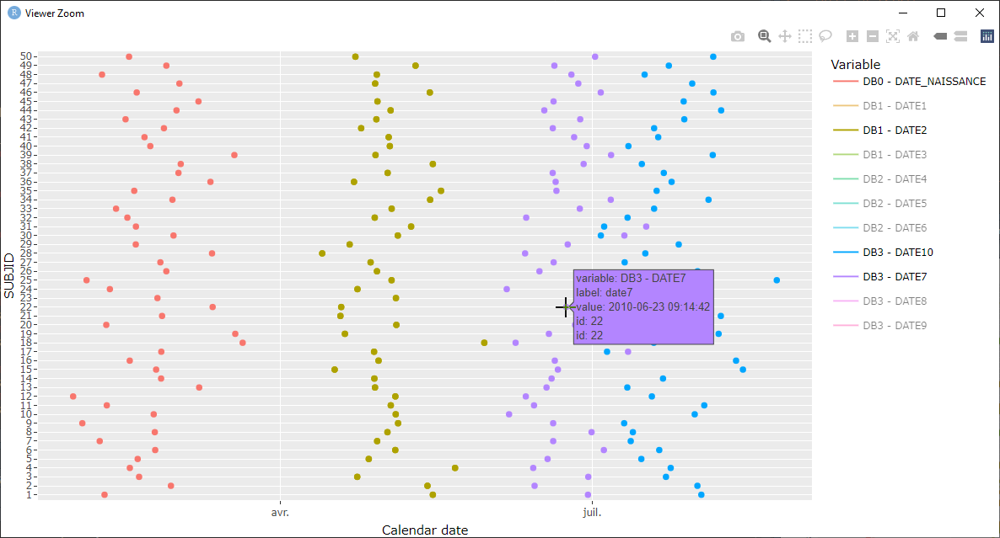

EDCimport is a package designed to easily import data from EDC software TrialMaster.
Installation
# Install last version available on CRAN (once published)
install.packages("EDCimport")
# Install development version on Github
devtools::install_github("DanChaltiel/EDCimport")You will also need 7-zip installed, and preferably added to the PATH.
[!WARNING] This package was developed to work on Windows and is unlikely to work on any other OS. You are very welcome to submit a PR if you manage to get it to work on Mac or Linux.
Load the data
Inside TrialMaster, you should request an export of type SAS Xport, with the checkbox “Include Codelists” ticked. This export should generate a .zip archive.
Then, simply use read_trialmaster() with the archive password (if any) to retrieve the data from the archive:
library(EDCimport)
tm = read_trialmaster("path/to/my/archive.zip", pw="foobar")The resulting object tm is a list containing all the datasets, plus metadatas.
You can now use load_list() to import the list in the global environment and use your tables:
There are many other options available (e.g. colnames cleaning & table splitting), see ?read_trialmaster for more details.
Database management tools
EDCimport include a set of useful tools that help with using the imported database. See References for a complete list.
Database summary
Reading a database using read_trialmaster() generates the .lookup dataframe, which contains for each dataset the number of rows, columns, patients, and the CRF name.
.lookup is used by many other tools inside EDCimport, be careful not to modify or delete it.
Search the whole database
Using find_keyword(), you can run a global search of the database.
For instance, say you do not remember in which dataset and column is located the “date of ECG”. find_keyword() will search every column name and label and will give you the answer:
find_keyword("date")
#> # A tibble: 10 x 3
#> dataset names labels
#> <chr> <chr> <chr>
#> 1 pat PTRNDT Randomization Date
#> 2 pat RGSTDT Registration Date
#> 3 site INVDAT Deactivation date
#> 4 site TRGTDT Target Enroll Date
#> 5 trial TRSPDT End Date
#> 6 trial TRSTDT Start Date
#> 7 visit VISIT2 Visit Date
#> 8 visit EEXPVDT Earliest Expected Visit Date
#> 9 vs ECGDAT Date of ECG
#> 10 vs VISITDT Visit DateSwimmer Plot
The edc_swimmerplot() function will create a swimmer plot of all date variables in the whole database.
There are 2 arguments of interest:
group, a grouping variable (e.g. the treatment arm)origin, a date variable acting as the time zero (e.g. the date of enrollment)
edc_swimmerplot()
edc_swimmerplot(group="enrolres$arm")
edc_swimmerplot(origin="enrolres$enroldt")This outputs a plotly interactive graph where you can select the dates of interest and zoom in with your mouse.

Note that any modification made after running read_trialmaster() is taken into account. For instance, mutating a column with as.Date() in one of the tables will add a new group in the plot.